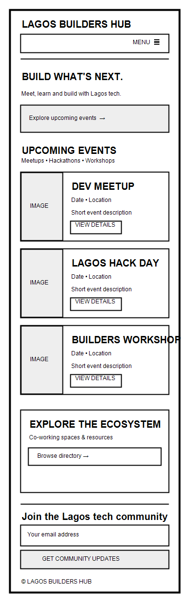
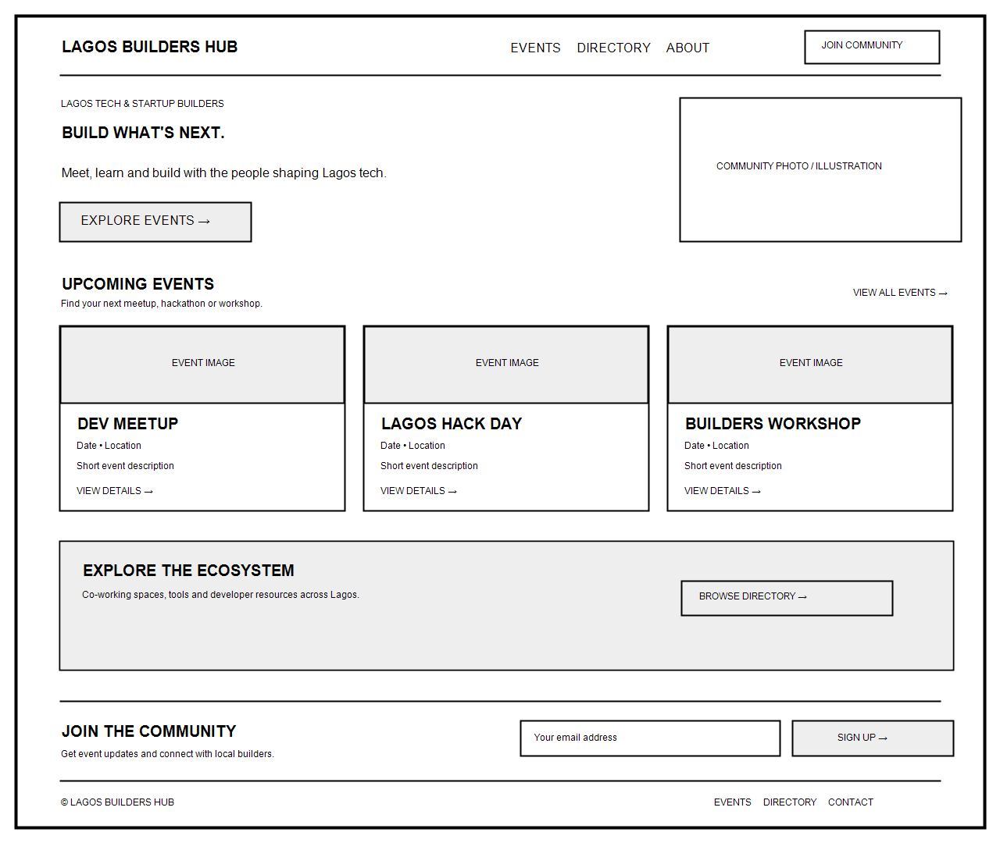

1. Site Name
Site Name: Lagos Tech & Builders Hub
Optional Domain: lagosbuildershub.org
Reason for Selection: This name clearly communicates the geographic focus (Lagos, Nigeria) and target community (developers, designers, students, and early-stage startup builders). It is descriptive, memorable, and easy to brand across events and developer resources.
2. Site Purpose
The Lagos Tech & Builders Hub serves as a central community information platform for tech learners and builders across Lagos. The three-page website will provide:
- Home Page: An overview of the Lagos tech ecosystem, featured community highlights, and quick access to upcoming events and learning tracks.
- Events & Hubs Directory Page: A dynamic, filterable directory of at least 15 local tech meetups, hackathons, workshops, and co-working spaces with detailed modal views and saved favorites using Local Storage.
- Community & Connect Page: Beginner-friendly developer learning resources and an interactive submission form allowing community members to propose events, recommend spaces, or join builder study groups.
3. Target Audience Scenarios
- Scenario 1: "I am a frontend coding student in Lekki/Yaba—where can I find upcoming free developer meetups, workshops, or affordable co-working spaces in Lagos this month?"
- Scenario 2: "I am organizing a weekend JavaScript or Python study jam—how can I submit my event details to be listed for local student builders?"
- Scenario 3: "Which beginner-friendly web development communities and open-source groups are active in Lagos right now?"
4. Color Scheme
The color palette is built for high contrast (WCAG AA/AAA compliant), technical clarity, and clean visual hierarchy, and is applied exclusively across this site plan document:
5. Typography
Two complementary Google Fonts are selected and applied across this site plan document:
- Headings Font —
Space Grotesk(600, 700): Used for all page titles, section headings (h1–h3), and navigation labels to give a modern, geometric tech aesthetic. - Body Font —
Inter(400, 600): Used for all body paragraphs, cards, form labels, and descriptions for clean readability on both mobile and desktop screens.
6. Home Page Wireframes
Below are the responsive black-and-white home page layout wireframes for mobile and desktop viewports:

